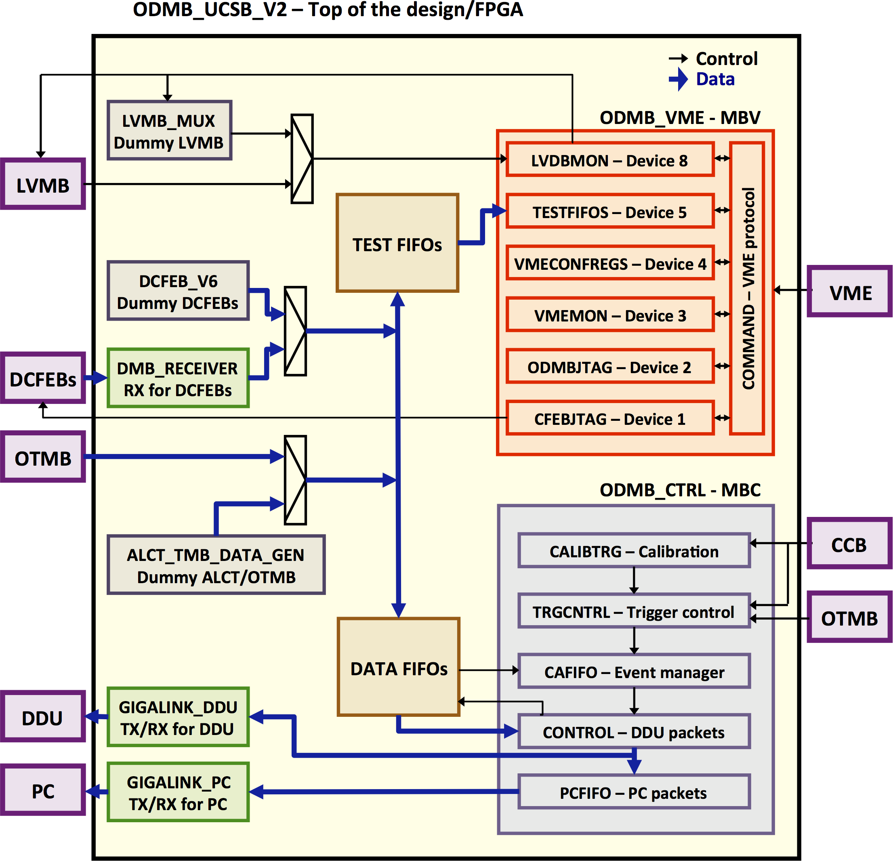

Obtaining the ODMB firmware
- Set up git.
- git clone git@github.com:odmb/odmb_ucsb_v2.git # Checks out the latest ODMB firmware
- cd odmb_ucsb_v2
- Open work/_info and delete everything after the fifth line (which should just be the letter "d"). It might already be blank.
- git update-index --assume-unchanged work/_info # Prevents from committing changes to work/_info
- For information about synthesizing or simulating the firmware, go here.